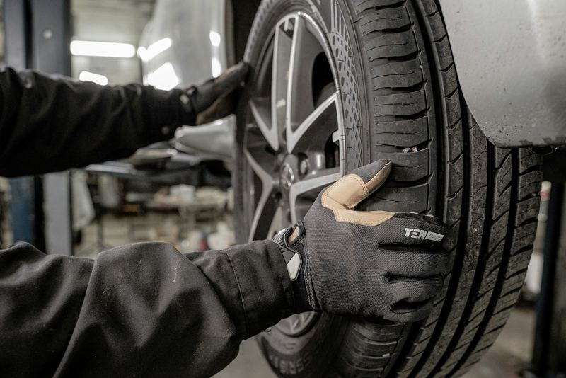
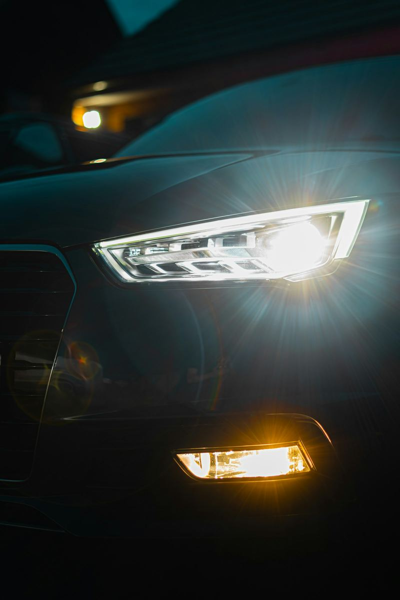
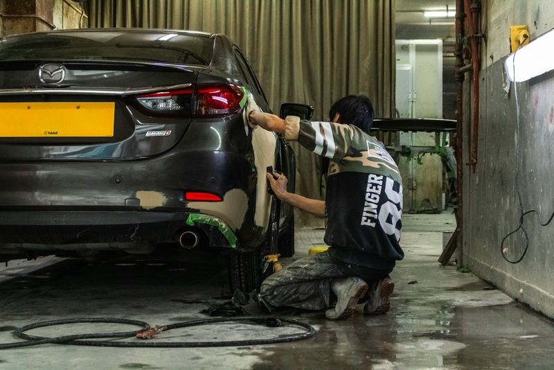
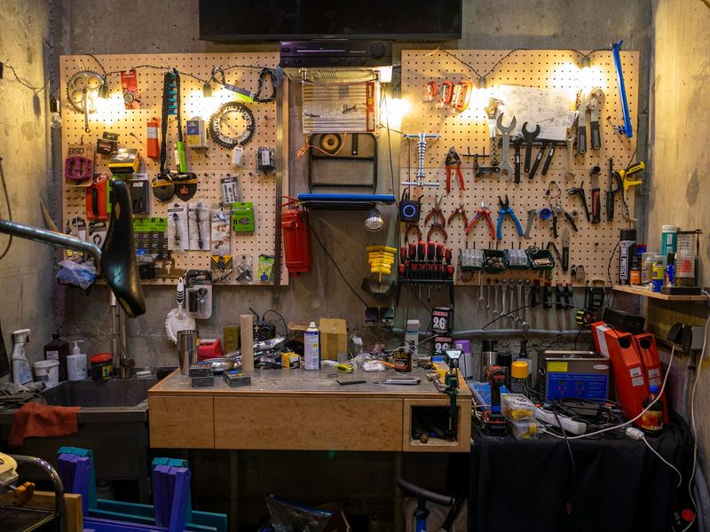

Pneumatiky
Nové pneu, přezutí, vyvážení.
U každého bodu klikněte na OK, nebo na Závada. Seznam závad nám pak pošlete a auto připravíme. Jde o orientační seznam, ne o úplný protokol technické.


Nové pneu, přezutí, vyvážení.

Prahy, podlaha a poškozené díly.

Těsnost výfuku, brzdy, ruční brzda.

Žárovky, stěrače, seřízení světel.